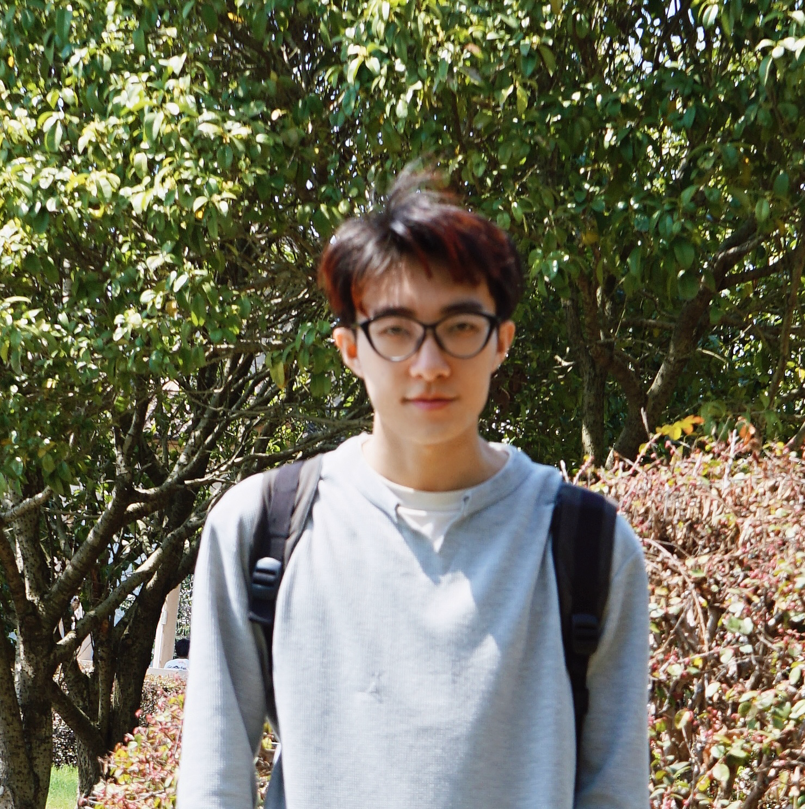
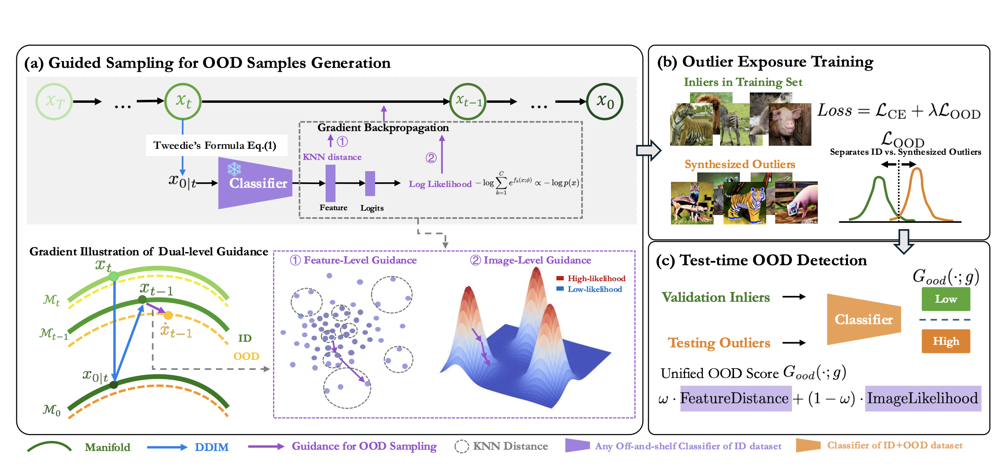
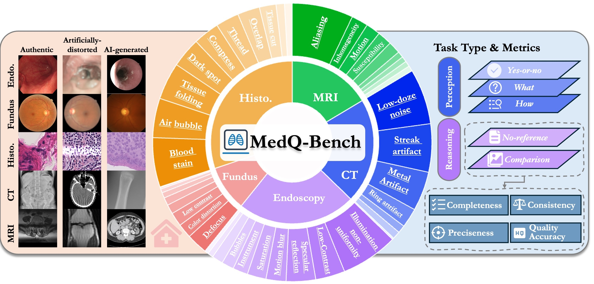
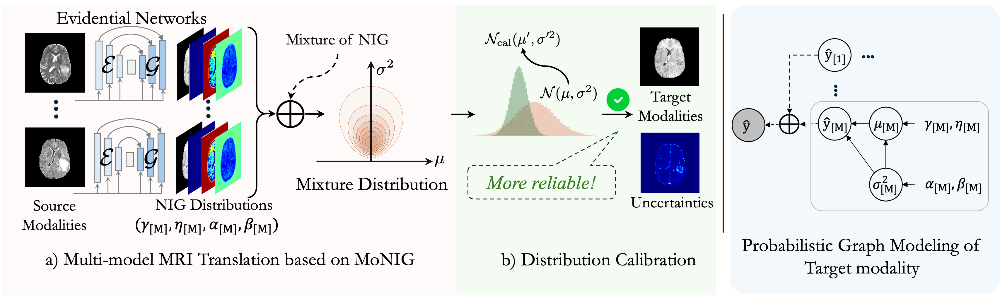
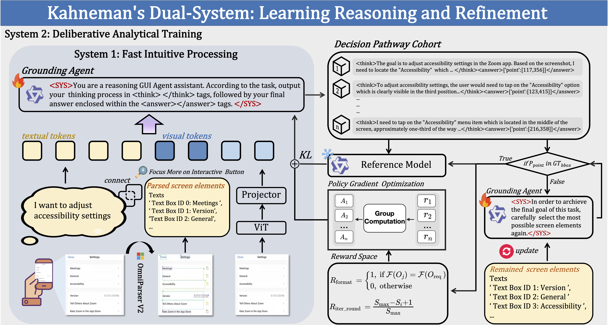
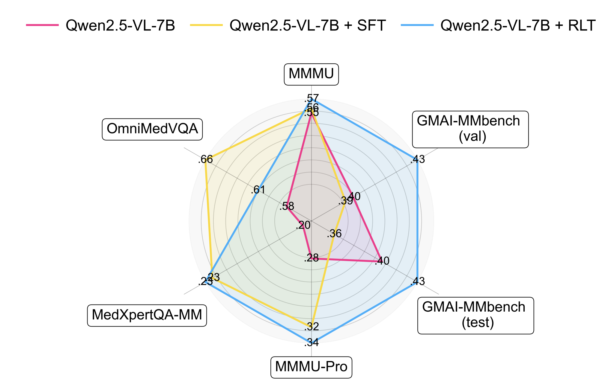
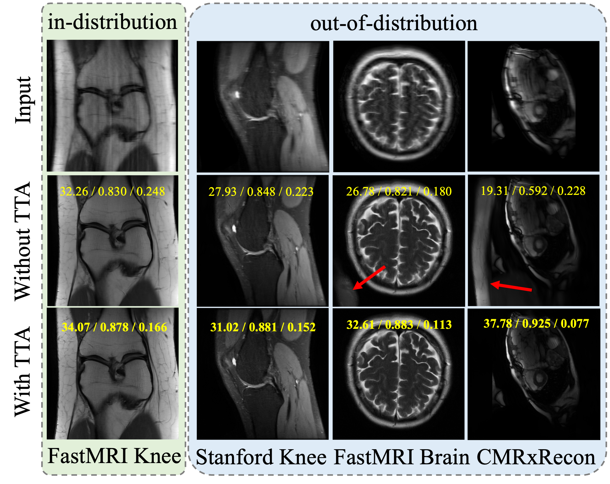
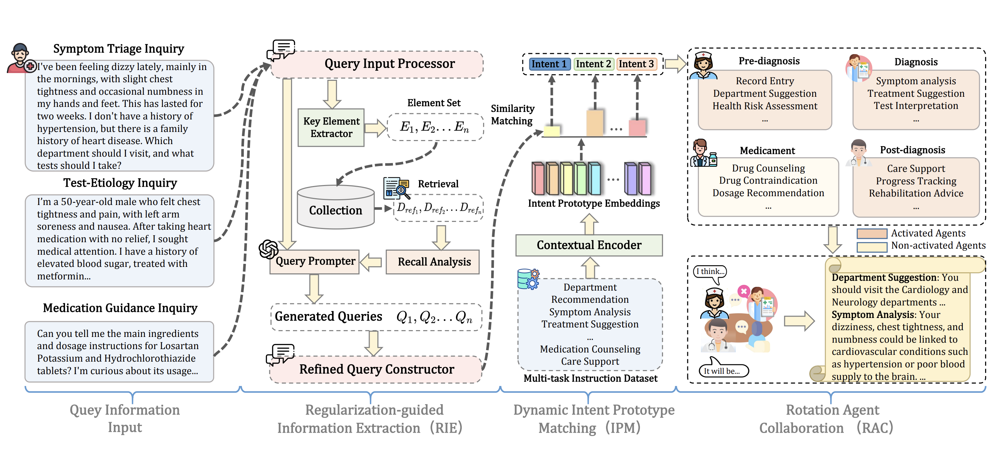
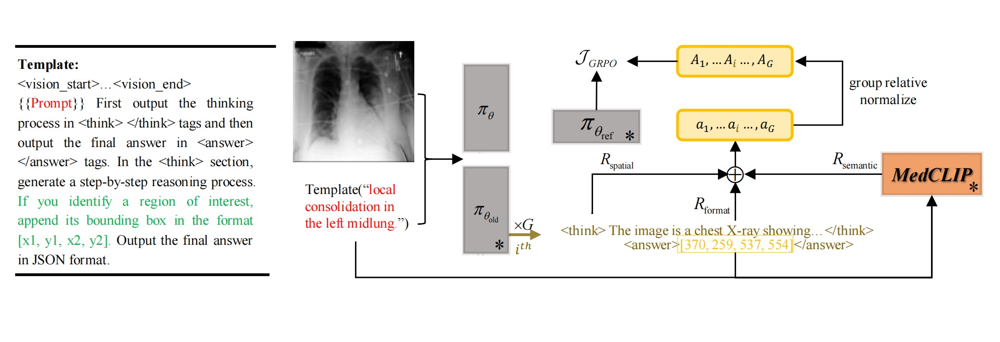
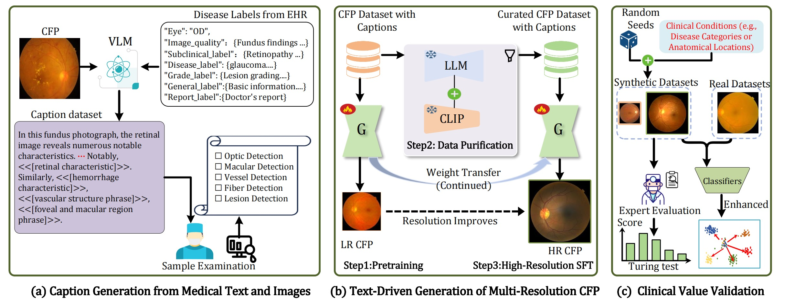

Jiyao LiuPh.D. Student Institute of Science and Technology for Brain-Inspired Intelligence (ISTBI)
|
 |


Biography
I am a third-year Ph.D. student at the Institute of Science and Technology for Brain-Inspired Intelligence (ISTBI), Fudan University, advised by Prof. Ningsheng Xu. I received my B.Eng. degree in Intelligence Science and Technology from Xidian University in 2022.
My research interests include MLLMs, Agents and Low-level Vision for AI for Healthcare/Science.
I am actively looking for collaborators and intern opportunities with a passion for AI!
News
- [09/2025] GOOD is accepted at NeurIPS 2026. Congrats to Xin Gao!
- [09/2025] MedAide is accepted at Information Fusion. Congrats to Jinjie!
- [05/2025] Three papers are accepted at MICCAI'2025 (Two early acc.). Big congrats to Junzhi, Huihui.
- [11/2024] I start my new journey at Shanghai AI Lab, working with Dr. Junjun He and Dr. Lihao Liu.
- [10/2023] One paper has been oral reported on SASHIMI, MICCAI workshop, 2023.
- [12/2021] I start my new journey at SenseTime, working with Dr. Qigong Sun.
- [05/2021] Mathematical Contest In Modeling, MCM/ICM, Outstanding Winner (Top 0.13%, ranked 7/5384)
Selected Publications
|
 |
GOOD: Training-Free Guided Diffusion Sampling for Out-of-Distribution Detection.
Xin Gao, Jiyao Liu (co-first), Guanghao Li, Yueming Lyu, Jianxiong Gao, Weichen Yu, Ningsheng Xu, Liang Wang, Caifeng Shan, Ziwei Liu, Chenyang Si
Conference on Neural Information Processing Systems (NeurIPS), 2026.
[paper] |
|
 |
MedQ-Bench: Evaluating and Exploring Medical Image Quality Assessment Abilities in MLLMs Jiyao Liu, Jinjie Wei, Wanying Qu, Chenglong Ma, Junzhi Ning, Yunheng Li, Ying Chen, Xinzhe Luo, Pengcheng Chen, Xin Gao, Ming Hu, Huihui Xu, Xin Wang, Shujian Gao, Dingkang Yang, Zhongying Deng, Jin Ye, Lihao Liu, Junjun He, Ningsheng Xu Arxiv Tech Report, 2025. |
|
 |
Multi-modal MRI Translation via Evidential Regression and Distribution Calibration
Jiyao Liu, Shangqi Gao, Yuxin Li, Lihao Liu, Xin Gao, Zhaohu Xing, Junzhi Ning, Yanzhou Su, Xiao-Yong Zhang, Junjun He, Ningsheng Xu, Xiahai Zhuang
Medical Image Computing and Computer Assisted Intervention (MICCAI), 2025.
[paper] |
|
 |
Learning, Reasoning, Refinement: A Framework for Kahneman's Dual-System Intelligence in GUI Agents
Jinjie Wei, Jiyao Liu (co-first), Lihao Liu, Ming Hu, Junzhi Ning, Mingcheng Li, Weijie Yin, Junjun He, Xiao Liang, Chao Feng, Dingkang Yang
Arxiv Tech Report, 2025.
[paper] |
|
 |
GMAI-VL-R1: Harnessing Reinforcement Learning for Multimodal Medical Reasoning Yanzhou Su, Tianbin Li, Jiyao Liu, Chenglong Ma, Junzhi Ning, Cheng Tang, Sibo Ju, Jin Ye, Pengcheng Chen, Ming Hu, Shixiang Tang, Lihao Liu, Bin Fu, Wenqi Shao, Xiaowei Hu, Xiangwen Liao, Yuanfeng Ji, Junjun He Arxiv Tech Report, 2025. |
|
 |
Bias-Calibrated Adaptation of Score-based Models for MRI Reconstruction
Jiyao Liu, Shangqi Gao, Lihao Liu, Yuxin Li, Jinjie Wei, Yachen Gao, Chengyan Wang, Junjun He, Ningsheng Xu, and Xiahai Zhuang
Submitted to MeDIA, 2025.
[paper] |
|
 |
MedAide: Information Fusion and Anatomy of Medical Intents via LLM-based Agent Collaboration
Dingkang Yang, Jinjie Wei, Mingcheng Li, Jiyao Liu, Lihao Liu, Ming Hu, Junjun He, Yakun Ju, Wei Zhou, Yang Liu, Lihua Zhang
Information Fusion, 2025.
[paper] |
|
 |
MedGround-R1: Advancing Medical Image Grounding via Spatial-Semantic Rewarded Group Relative Policy Optimization
Huihui Xu*, Yuanpeng Nie*, Hualiang Wang, ..., Jiyao Liu, Xiaomeng Li†, Junjun He†
Medical Image Computing and Computer Assisted Intervention (MICCAI spotlight), 2025.
[code] |
|
 |
RetinaLogos: Fine-Grained Synthesis of High-Resolution Retinal Images Through Captions
Junzhi Ning*, Cheng Tang*, ..., Jiyao Liu, Jin Ye, Sheng Zhang, Yuanfeng Ji, Junjun He†
Medical Image Computing and Computer Assisted Intervention (MICCAI), 2025.
[code] |
Experience
-
Shanghai AI Lab, Shanghai, ChinaNov. 2024 – PresentResearch Intern at General Medical Group - I work on multi-modal foundation models for medical applications.
-
SenseTime, Xi'an, ChinaDec. 2021 – Jun. 2022Research Intern - I work with Dr. Qigong Sun on medical imaging and AI applications.
-
Fudan University, Shanghai, China2022 – PresentPh.D. Student at Institute of Science and Technology for Brain-Inspired Intelligence (ISTBI) - Advised by Prof. Ningsheng Xu, focusing on medical AI and multi-modal LLMs.
-
Xidian University, Xi'an, China2018 – 2022B.Eng. in Intelligence Science and Technology - Graduated with honors and received National Endeavor Scholarship.
Honors & Awards
- Undergraduate Excellence Award [Rank 6/300], Xidian University, 2022
- MCM/ICM, Mathematical Contest in Modeling, Outstanding Winner (Top 0.13%, ranked 7/5384), 2021
- National Endeavor Scholarship (BSc), Xidian University, 2019/2020/2021
Professional Activities
-
Invited Talks:
- International Workshop on Simulation and Synthesis in Medical Imaging (SASHIMI), MICCAI workshop, "Oral report", October 2023.
- International Society for Magnetic Resonance in Medicine (ISMRM), "Oral report", March 2021.
-
Reviewer:
- Medical Image Analysis, ICLR
-
Collaborators:
I sincerely thank Prof. Xiahai Zhuang, Dr. Shangqi Gao, Dr. Lihao Liu, Jinjie Wei, Xin Gao and Dr. Xiao-Yong Zhang for their valuable collaboration and support in my research.
Visitor Statistics

© Jiyao Liu | Last updated: